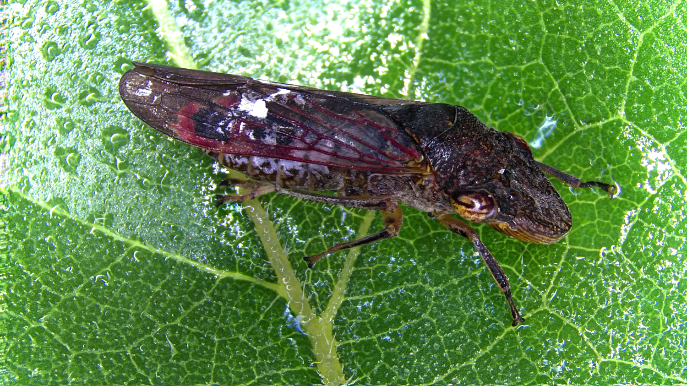

		<!-- Main -->
			<article id="main">
					
				<!-- One -->
					<section class="wrapper style4 container">
					
						<!-- Content -->
							<div class="content">
								<section>
										<header>
										<h3><strong>Glassy-winged Sharpshooter
</strong></h3> </header>


<div class="row">


<div class="6u">
<p>Homalodisca vitripennis, aka the glassy-winged sharpshooter, is a xylem feeding leafhopper, invasive to California and an important agricultural pest as a vector of Xylella fastidiosa. As part of my postdoc work with Dr. Jason Stajich, I am working on genome improvements, as well as investigating genomic mechanisms that might lead to insecticide resistance.
	
As part of our genome improvement efforts, we used a combination of Oxford Nanopore long-read sequencing technology combined with Illumina sequencing reads to generate an improved assembly and first-pass annotation of the whole genome sequence of a wild-caught Californian (Tulare County) individual of H. vitripennis. This improved genome enabled us to identify 27 orthologous candidate genes of interest for future experimental work including phenotypic marker genes like white. 

</p>

</div>

	<div class="6u">
		<a class="image featured special"></a>
	</div>
</div>
	
								
								<p>
								<b>Related publications:</b>
								<ul>
								<li> <b>Ettinger CL</b>, Bryne FJ, Collin MA, Carter-House D, Walling LL, Atkinson PW, Redak RA & Stajich JE. 2021. Improved draft reference genome for the Glassy-winged Sharpshooter (Homalodisca vitripennis), a vector for Pierce's disease. G3: Genes | Genomes | Genetics. DOI: <a href="https://doi.org/10.1093/g3journal/jkab255"> 10.1093/g3journal/jkab255</a>  </li>
		
								</ul>	
								</p>
										
										
		
												
									
								
							
								</section>
							</div>

					</section>
					
					
					
					
						
										
								
					
			</article>
